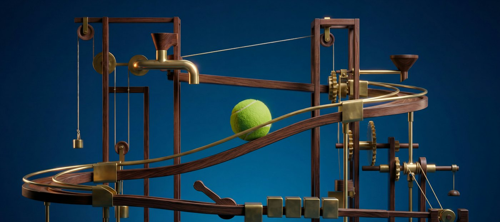

Leonardo.Ai (Canva)
Blueprints
A workflow engine for AI-powered image and video generation. Each Blueprint chains models, prompts, references and settings into a single click.
- Problem solved
- Getting a good result by hand means choosing a model, tuning settings and iterating. A Blueprint runs that whole pipeline end to end from one input, and picks up new models as they ship, so the workflow stays one click.
- My role
-
- Led the backend implementation.
- Worked with product stakeholders to define requirements and set expectations.
- Wrote and reviewed code alongside the team.
- NestJS
- AWS Step Functions
- ECS